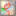

0.9.2.3.3 pre - Documentation
Please read /home/QtPalmtop/help/html/readme.txt file for new features and known problems.
Installation
Just install the provided qpegps package.
Warning: The format of the entries in maps.txt has changed since version 0.2.3. The installlation of the 0.9 version will overwrite an existing maps.txt ! For those who want to update their old maps.txt manually: Just add width and height of the images behind the scale entry. If You get problems at downloading maps, You may need to install the zlib package, too (this depends on Your installed Qtopia or Opie version).
For users of the german Sharp ROM (or any other
non english version from Sharp): Due to a bug in the Sharp ROM,
the english help is not found if Your Zaurus has another default language
than english. To enable the included help ("?") You need to add a link
to the qpegps.html file (type in a terminal, one line):
ln -s /opt/QtPalmtop/help/html/qpegps.html
/opt/QtPalmtop/help/de/html/qpegps.html
(For other languages replace "/de" with the corresponding
path of Your language)
General notes:
qpeGPS now includes two different modes...
1.) GPS-navigation mode - This is standard GPS navigation with some additional features such as saving plae coordinates and saving destination points. You will see the standard navigation crosshair in the center of the screen.
2.) map-navigation mode - This mode enables you to browse maps even without a GPS receiver. Instead of the crosshair this mode uses an arrow in the center of the screen, which points in the direction of the selected position. There is no current (GPS based) position changing in map mode so you can browse (move) manually.
config | status | map | info |  track | route
1. CONFIGThe path to directory where the images of the maps are stored can be selected (the internal configuration files maps.txt and sources.txt are in the same directory). This can be used for selecting different storage devices or for the selection of different kind of maps (street, aviation, nautic...).
qpeGPS uses wget for fetching maps from the net. If Your PDA is connected via a proxy server to the internet, You may need to set the address of the "Proxy" (e.g. http://foo.bar.com:80). If You don't use a proxy server, just let it empty. (For the specialists: this sets the environment variable http_proxy. If it is still set in Your environment, let it empty).
You can select the units for altitude, speed and distance. The format of the position can be selected, too. There are also checkboxes where You can select which information will be displayed on the map.
The colors and the size of the text inside the map display can be selected, too.
2. GPS StatusThe setup and the health of the GPS connection is displayed on the GPS status page.
In order to use all the features of qpegps, a proper connection to a GPS device is needed. qpegps does not directly connect to the device, it uses a separate program called "gpsd". gpsd is a daemon program which runs in the background connects and reads data from a GPS and provides its data via Tcp/Ip to clients via the telnet protocol.gpsd needs to be run where the GPS is physically connected to. gpsd is not part of qpegps but its included in the installation. gpsd is freely available from the web (click here Thanks to Russ Nelson).
The GPS status page consists of four sections:
2.1 gpsd SettingsHere you can change the arguments to gpsd when run locally (default). Or specify the hostname/port of the remote machine gpsd is running on. Note: in order to run gpsd on the local machine the hostname must be "localhost". Any modifications to the setup here will automatically reset the current connection and start/restart gpsd if necessary.
CompactFlash GPS users: try changing gpsd arguments to -p /dev/ttyS3 -s 4800 if you have no GPS signal.
2.2 Data Status
This group provides a quick overview of the current health of the GPS connection. The data is updated every 1/4 second and reflects the actual data read from the GPS (via gpsd).
gpsd: Shows the status of the vital gpsd connection. The status is either green (OK) which means a proper telnet connection to the gpsd program has been established and data can be exchanged. Or the status is red (???) which means no connection has been established.
Please check gpsd settings.
GPS: Shows the actual status of the GPS device connected to gpsd. A valid gpsd connection is required to show any useful information. The status is either green which means a GPS device has been found and is sending data correctly. In this case the status also shows the three letter GPS device code (e.g. GRM form Garmin). Or the status is red (???) which means no GPS device was found or the GPS stopped sending.Please check the cable or gpsd settings.(e.g. baud rate)
Note: It is possible that the status shows multiple device tags alternating. This is not a problem, it just shows that there is more than one GPS device connected. (e.g. a GPS and a DGPS device).
GMT: This field either shows the current GMT (Greenwich Mean Time) received by the GPS (green) or "No GMT Signal rcvd" (in red) when no valid GPS connection has been found yet. Or it shows the last received time in red meaning the GPS has stopped sending data.Lat/Lon: These fields show the last fixed position (Latitude/Longitude) of the GPS in either green which means the shown location is valid for the GMT time shown above, or in red, which means the shown position is outdated/not valid since the GPS can not achieve a proper location fix due to various problems.
Note: A proper connection to the GPS is required at all times to display a valid fix. If the connection to the GPS is interrupted somehow the status will turn red to reflect this accordingly. However, for your convinience the position of the last valid fix and it's time stamp are still shown.
2.3 Misc Graphics
This group shows various information. Three timegraphs at the top show the changes to the Altitude (A), the Speed (S) and the Satellites (#) over the past 160 seconds. The altitude and speed timeline shows relative values. All values shown are scaled so the maximum and minimum values known so far line up with the upper and lower margins of the graph.
The Satellite timeline shows valuable information about the number of Satellites visible (blue) and number of Satelites used for the position pix (green) at that time. Since only twelve Satellites can be used at any time the graph shows absolute values (12 pixels). In addition, if there is a communication problem with the GPS, a red vertical bar is shown.
Below the timelines is a compass showing the current heading and bearing with arrows in the color chosen in the qpegps main setup. On the right hand side of the compass it shows the current speed, altitude, heading and bearing in absolute values and in the format chosen in the qpegps main setup.
Note: The display of Heading and Bearing can be switched on/off independantly (see main setup).
2.4 Satellite Signal Quality
This graph shows the SNR (Signal Noise Ratio) from 0db to 50db for each satellite in view, which basically expresses the quality of the signal for each satellite and the location fix in total. In addition the name of each Satellite is shown below the graph. If there is a current valid location fix the signal bars are drawn in green, otherwise they are drawn in red.
3. INFO about and handling of Maps
3.1 Check Maps
Just select one map and click on a position with a known latitude and longitude and compare it with the displayed postion on the bottom of the map.
3.2 Display TracksYou can display tracks on the map.
3.3 Download Map
The map download feature allows you to download maps for use with qpegps from
the internet. There are several sites which provide free maps for download.
There are two download modes in qpegps. Press download button and you will see popup menu where you can chose between this two modes. Chose "Download few maps cover area from expedia" or "Download few maps cover area from multimap" menu item in this popup menu if you want to download few (many) map files which will cover some area (region) from www.expedia.com or www.multimap.com (read 3.3.1. item for more info about this mode). or chose "Download single map from configurable source" if you need to download single map file from any configurable source (not www.expedia.com or www.multimap.com) (read 3.3.2. item for more info about this mode).
3.3.1. Area download mode.
In this mode you can download few maps which will cover some area, but this feature now available only for some sources (www.expedia.com or www.multimap.com).
If you will chose "Download few maps cover area from expedia" or "Download few maps cover area from multimap" menu item you will see "Download maps" dialog. There are two available forms of this dialog:
- In first (default) form ("Area size" form) you must enter area central point coordinates. You can do this by two ways: by entering coordinates (in degrees in "Lat.(D.d):" / "Long.(D.d):" fields) or by choosing waypoint (place) coordinates (press "Select central point" button). This is useful if you need to download maps around some point (for example your current coordinates). Also you need to enter vertical (North-South) and horizontal (East-West) area distances from the central point (half of total area size) which must be covered by maps. All this distances in kilometers.
For example if you want to download maps which will cover area 300 x 300 km around the center of the Moscow (Russia) you must to enter coordinates Lat.(D.d): 55.7516 Long.(D.d): 37.6177 (or press "Select central point" button and chose Moscow place (waypoint) from appropriate dialog) and enter 150 in the "North-South area size:" and "East-West area size:" fields.
- In alternative form ("Start-End coordinates" form) you can enter (or chose from places dialog) left-top point coordinates (in Start Latitude and Start Longitude fields in degrees) and right-button point coordinates (in End Latitude and End Longitude fields in degrees) .
You can switch between this modes by pressing "Area size" or "Start-End coordinates" items in the appropriate horizontal switchbox.
In both forms you can chose map Scale in appropriate listbox (for example use 100 000 or 200 000 scale to intercity road navigation and 4 000 scale for navigation in to the city). Note: not all scales available from map server.
Also you can select map file resolution use 1332x1332 for slow computers with small amount of the RAM (such as Sharp Zaurus 5x00) or high resolution for powerful computers (Sharp Zaurus SL-C750/760/860..). Higher resolution will usually produce less files and spend less disk space for the same area, but it will require more RAM and processor power while qpegps operation.
Also you can chose "Download directory" to chose directory and parse additional parameters to download utility(downmap) by filling "Params:" field. Open terminal (console) application and enter "downmap -h" command line to see full lits of the the parameters.
If need to use proxy: open terminal (console) application and enter two commands:
export http_proxy=http://myproxy:8080
qpegps
where : myproxy - is a your proxy address and 8080 is a proxy port number.
3.3.2. Single map file download mode.
In the Map Source groupbox, select the source from the dropdown for the site you wish
to download from. In the Download groupbox, specify a name for the map. The name
should not contain spaces and is not a filename. Specify latitude and longitude as
decimal values being sure to set the hemisphere dropdowns to the appropriate
settings. (Note that a longitude of -71.0 East is equivalent to the longitude of
71.0 West.) Finally, specify the scale of the map you wish to download. Some common
scale values are provided in the dropdown, but the field is also editable so you may
enter the exact scale that you want. Clicking OK from this dialog will begin the
download. Depending on the speed of your internet connection and the size of the map
image being downloaded, this could take a few minutes. Once the download is complete
the map is available to qpegps.
Map Source Configuration
Qpegps uses a text configuration file to store map download source specifications. In your qpegps maps directory there is a sources.txt file. You can edit this file to add additional map sources. Qpegps comes preconfigured with one download source setup (MapBlast). Look at sources.txt to see the format. 3.4 Import MapIn the first dialog you are selecting the map/image which shall be imported. During the import the image is copied to the maps directory and converted to the PNG format. With the radio buttons You can select, whether the original image shall be removed or not. Pressing OK opens the second dialog which shows the selected map and some necessary parameter. Which parameters are used depends on the projection.All inputs of latitudes or longitudes can be entered as a floating value in degree or in the format Degree Minutes Seconds (e.g.: 15.51 = 1530'36" = 15 30 36).
Available projections and there parameters:
- Linear (=cylindrical equal distance)
- scale: only used for the selection of maps, if there is more than one which covers the current position.
- 2 known points: x and y are the position of the pixels of the map and long and latitude represents the position on earth. x1,y1 (x2,y2) can be obtained by selecting there edit fields and then clicking on the map. After this enter the corresponding long1,lat1 (long2,lat2).
- CEA (Cylindrical Equal Area)
- scale: only used for the selection of maps, if there is more than one which covers the current position.
- 2 known points: x and y are the position of the pixels of the map and long and latitude represents the position on earth. x1,y1 (x2,y2) can be obtained by selecting there edit fields and then clicking on the map. After this enter the corresponding long1,lat1 (long2,lat2).
- UTM (Universal Transverse Mercator)
- scale: only used for the selection of maps, if there is more than one which covers the current position.
- 2 known points: x and y are the position of the pixels of the map and east and north represents the position on earth. x1,y1 (x2,y2) can be obtained by selecting there edit fields and then clicking on the map. After this enter the corresponding easting and northing: east1,north1 (east2,north2).
- Zone: Zone of the map
- TM (Transverse Mercator)
- scale: only used for the selection of maps, if there is more than one which covers the current position.
- 2 known points: x and y are the position of the pixels of the map and long and latitude represents the position on earth. x1,y1 (x2,y2) can be obtained by selecting there edit fields and then clicking on the map. After this enter the corresponding long1,lat1 (long2,lat2).
- stdLongitude: the standard longitude for which the projection was calculated, usually noted on the map. If not, try the longitude of the center of Your map.
- MERCATOR
- scale: only used for the selection of maps, if there is more than one which covers the current position.
- 2 known points: x and y are the position of the pixels of the map and long and latitude represents the position on earth. x1,y1 (x2,y2) can be obtained by selecting there edit fields and then clicking on the map. After this enter the corresponding long1,lat1 (long2,lat2).
- LAMBERT (Lamberts conical projection with 2 standard parallels)
- scale: only used for the selection of maps, if there is more than one which covers the current position.
- 2 known points: x and y are the position of the pixels of the map and long and latitude represents the position on earth. x1,y1 (x2,y2) can be obtained by selecting there edit fields and then clicking on the map. After this enter the corresponding long1,lat1 (long2,lat2).
- std1, std2: 2 standard latitudes, usually noted on the map
- refLong: reference longitude, if not noted on the map, usually the center of the map (the whole map, not just a scanned part of it).
- FRITZ (projection usefull for maps from mapblast and expedia derived
from FRITZ Ganthers gpsdrive :-)
- scale: is used for caculating distances (=relation between distance on earth and pixels from the image).
- center_latitude, center_longitude: the postion in degrees of the center of the map.
- See also the download section.
Here You can change the properties (parameters) of maps
3.6 Remove MapRemoves the selected map. There is a check box, where You can select whether the map shall only be removed from the internal maps list or if the image of the map shall be deleted, too.
4. Moving MAPNow available two qpeGPS modes:
1. GPS navigation mode ("GPS mode") - This is standard GPS navigation with some addition (saving place coordinates, and setting destination features). In this mode you will see standard navigation crosses at the center of the screen.
2. Map navigation mode ("map mode") - This is mode to browsing maps. It work with or without GPS receiver. You can browse maps in this mode. In this mode we will see an arrow in the center of the screen (it will point to selected current position).
3. Use <BS> keyboard button (key) or pressong <OK> keyboard button (key) and choosing "Switch to GPS/Map mode" menu item or Fast Double Click (within 0,2 sec) - to switch between GPS and Map navigation modes.
If Your maps are overlapping by 240 pixel vertically and 320 pixel horizontally (screen size), You will never see the end of a map, because qpeGPS then will always select the map which fills the screen.
4.1 Map mode features
In "map mode" you can simply move current position (browse map) by pressing <Arrow key> (for example Up to move up...). Also you can move map by moving stylus (mouse). For this you can press on the touchscreen (or mouse button), move stylus (cursor) and then release stylus (mouse button) it will change current map position (move map).
Also in "map mode" you can change map scale (choose more or less detailed map) by pressing <Shift+Arrow key> (for example Shift+Up to chose more detailed map...). Also you can do it by pressing Ok or Return key and selecting appropriate item in popup menu.
You can click to any point on the map and you will see dialog with point's position (coordinates) in this dialog you can save this position in places.txt file (by pressing "Save" button or "OK" key ) or measure distance from this point to any another point (which will be selected by next click) by pressing "Measure" button. Also you can measure summary distance between few places (wayponts) by clicking on the map few times and using "Measure"; button each time then you will see distance between last two points and summary distance.
You can set any coordinates (current position) or restore position. All places saved in file places.txt in configurable "Track dir:" directory path (default path: /home/QtPalmtop/qpegps/tracks/places.txt). You can do it by pressing Enter or Ok key and choosing "Go to Place/Waypoint" item in popup menu.
You can save / restore places (waypoints) current position or potentially any position in "map mode"; (by pressing <Shift+Enter> key or by pressing Enter or Ok key and choosing "Save Place/Waypoint"; item in popup menu, or buy clicking on the appropriate point and pressing "Save"; button).
navigationQpegps can draw the saved places (waypoints) on the moving map. For switching on this mode you can press "OK" button and chose "Draw places" menu item. You can switching off this mode by pressing "OK" button and chose "Don't draw places" menu item.
You can use animation of the saved tracks by the moving map. For start of the animation you can (in "Map mode") press "OK" button and chose "Animate track" menu item. Then you can choose track file (saved in /home/QtPalmtop/qpegps/tracks/ directory). Also you can choose "Time accelerator" which is accelerate animation time. For example if you set "Time acceleration:"=10 time in animation will be 10 times faster then real time.You can setup "Time Zone: GMT+" field you can enter time shifting from GMT (Grinvich Mean Time). Also if you will check "Shortcut large time interval" all time intervals (accelerated not original) larger then 1 minutes will be converted to 5 second. This is useful if you animate track with long term stops.
To stop animation you can in "Map mode" press "OK" button and chose "Stop track animation" menu item.
4.2 GPS mode features
A cross marks your position on the map (always in center). The color of the cross (and the text) indicates the gps status: black=ok, yellow=not fixed. The green line indicates your current heading. The red line indicates the direction to the next waypoint (bearing). If the waypoint reaches a position on the map, it is marked by a small rectangle. Altitude, heading, speed, bearing, distance to the waypoint and the time to the next waypoint are given as text info on the map.
Selecting maps:
'most Detail
mode' (default): If You have several maps (with a different scale) which
cover Your current location, then always the map with the most details
is selected.
'Specific scale': This mode is enabled by pressing the 'Down' key. It
selects always the map with a similiar scale to the current one. In
the upper left corner it shows "-/+".
"+" : there is a more detailed map available. You can select
it by pressing the "Up" key.
"-" : there is a less detailed map available. You can select
it by pressing the "Down" key.
"D" : the next pressing of "Up" will select the
"most Detail mode'.
Pressing the 'Space' or
You can save / restore places (waypoints) current position in "GPS mode" (by pressing <Enter> key) or potentially any position in "map mode" (by pressing <Shift+Enter> key or by pressing Enter or Ok key and choosing "Save Place/Waypoint" item in popup menu.
You can Set/Clear Destination point/place (only for qpeGPS not for GPS receiver). Press Enter or Ok key and choose "Set/Clear Destination" item in popup menu after it you will see "Set/Clear Destination" dialog where you can choose place/waypoint or enter coordinates, you will set destination if you will press Ok button/key or you will clear/cancel previously destination if you will will press "Cancel" key or "..." window button. Also you can click on the map and set appropriate point as Destination.
You can click to any point on the map and you will see dialog with point position (coordinates) and distance from current position to the pointed point, also in this dialog you can save pointed position in places.txt file (by pressing "Save" button) or Set up pointed position as destination (by pressing "Destination" button).
After setting Destination you will see distance from current point to this destination point in the bottom of the screen.
In any mode you can delete saved places (waypoints) in
"Track" tab (simply choose place in combo box and press "Delete"
button). Or you can manually edit /places.txt file by any text editor.
This file stored in configurable "Track dir:" directory (default
path: /home/QtPalmtop/qpegps/tracks/places.txt).
Qpegps can draw the saved places (waypoints) on the moving map. For switching on this mode you can press "OK" button and chose "Draw places" menu item. You can switching off this mode by pressing "OK" button and chose "Don't draw places" menu item.
|
GPS mode |
Map navigation mode (works with or without GPS receiver) |
|
<BS> keyboard button (key) or pressong <OK> keyboard button (key) and choosing "Switch to GPS/Map mode" menu item or Fast Double Click (within 0,2 sec) - switch between GPS and Map navigation modes |
<BS> keyboard button or or pressong <OK> keyboard button (key) and choosing "Switch to GPS/Map mode" menu item Fast Double Click (within 0,2 sec) - switch between modes GPS and Map navigation modes |
| <Cancel> / <Esc> or <Space> button will change view (switch to full screen mode and back) | <Cancel> / <Esc> or <Space> button will change view (switch to full screen mode and back) |
|
on <Stylus/Mouse click> on the map you will see dialog with point position (coordinates) and distance from current position to the pointed point, also in this dialog you can: 1. Press: "Cancel" button - to Quit (do nothing) 2. Press "Save" button to save pointed position in places.txt file. 3. Press "Destination" button to Set up pointed position as destination |
<Stylus click> or <Mouse click> - you will see message with point coordinates and with three buttons and associated possibilities: 1. Press: "Cancel" button - to Quit (do nothing) 2. Press: "Save" or "OK" button to - save place coordinates 3. Press: "Measure" button - to measure distance between two points. This point will be first. Make next click |
|
<Return> or <OK> keyboard button by using popup menu you can: 1. Save current position coordinates as place coordinates in places.txt file 2. or Set/Clear Destination 3. "Draw places" / "Don't draw places" - to start/stop drawing the saved places (waypoints) on the map. 4. Change view - switch to full screen mode and back 5. Switch to Map mode |
<Return> or <OK> keyboard button to chose popup menu. Then you can select: 1. "Go to Place/Waypoint" - to move current position to manually entered place coordinates or to coordinates from saved places (from places.txt file) 2. "Save Place/Waypoint" to save current position 3. "Draw places" / "Don't draw places" - to start/stop drawing the saved places (waypoints) on the map. 4. "Animate track" / "Stop track animation" - to start/stop drawing animation of the saved tracks by the moving map. 5. Change view - switch to full screen mode and back 6. Switch to Map mode 7. More detailed map (Shift+Up) to chose more detailed map 8. Less detailed map (Shift+Down) to chose less detailed map |
|
<Shift + Return> or <Shift + OK> keys - Save current position coordinates as place coordinates in places.txt file |
<Shift + Return> or <Shift + OK> keys Save current position coordinates as place coordinates in places.txt file |
|
<space> key switch between full screen and normal modes (no changes same as in original version) |
<space> key switch between full screen and normal modes |
|
<Left>, <Right>, <Up>, <Down> keys choose less and more detailed maps
|
<Left> <Right> <Up> <Down> keys move current position (and map of course) to appropriate direction. Use it for navigation/browsing maps Also you can press on the touchscreen (or mouse button), move stylus (cursor) and then release stylus (mouse button) for changing current position (moving map). <Shift + ArrowUP>, <Shift + ArrowDown>, <Shift + ArrowLeft>, <Shift + ArrowRight>, <Left>, <Right>, <Up>, <Down> keys choose less and more detailed maps |
Make sure that an existing track directory is selected for storing tracks. To start logging your track write its name to the write field and check the checkbox. The tracklog will be actually written when unchecking the checkbox or quitting qpegps. If you select a existing filename, new trackpoints are appended to the existing track. You can set a minimal time difference between trackpoints to control the size of the file.
To display a track select it or write its name to read field and check the checkbox. It's displayed in bearing color (set in config) with specified line width (1-5) in the map page (if it fits in). To see it on the info map you have to reload the map.
You can also copy the file to your desktop and display it with GpsDrive.
5.1 Deleting places
You can delete saved places in "Track" tab (simply choose place in combo box and press "Delete" button). Or you can manually edit /places.txt file with any text editor. This file stored in configurable "Track dir:" directory (default path: /home/QtPalmtop/qpegps/tracks/places.txt)
5.2 Startup mode
You can select qpeGPS startup mode. For this you can check "Map mode" check box for startup in Map mode or uncheck "Map mode" check box for startup in GPS mode.
Also you can choose startup "place" (position) by choosing "place" in listbox near "Map mode" check box.
Waypoints and routing are still on our schedule. But qpeGPS uses the routing information from the GPS (bearing and distance to next waypoint).
To read help please open /home/QtPalmtop/help/html/qpegps.html file from your web browser.
Read /home/QtPalmtop/help/html/readme.txt for new information and known bugs.
Copyright 2003-2005 - qpeGPS project team, All Rights Reserved. Don't hesitate to comment!